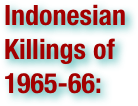

Indonesian Massacres: Terms
Please scan the terms to find what you are looking for - they are not in order!
.pdf (. . . )


Indonesia, officially the Republic of Indonesia, is a country in Southeast Asia and Oceania. Indonesia comprises 17,508 islands and thirty three provinces. With over 238 million people, it is the world's fourth most populous country, and has the world's largest population of Muslims. Indonesia is a republic, with an elected legislature and president. The nation's capital city is Jakarta. The country shares land borders with Papua New Guinea, East Timor, and Malaysia. Other neighboring countries include Singapore, Philippines, Australia, and the Indian territory of the Andaman and Nicobar Islands. Indonesia is a founding member of ASEAN and a member of the G-20 major economies. The Indonesian economy is the world's eighteenth largest economy by nominal GDP and fifteenth largest by purchasing power parity. The Indonesian archipelago has been an important trade region since at least the 7th century, when Srivijaya and then later Majapahit traded with China and India. Local rulers gradually absorbed foreign cultural, religious and political models from the early centuries CE, and Hindu and Buddhist kingdoms flourished. Indonesian history has been influenced by foreign powers drawn to its natural resources. Muslim traders brought Islam, and European powers brought Christianity and fought one another to monopolize trade in the Spice Islands of Maluku during the Age of Discovery. Following three and a half centuries of Dutch colonialism, Indonesia secured its independence after World War II. Indonesia's history has since been turbulent, with challenges posed by natural disasters, corruption, separatism, a democratization process, and periods of rapid economic change. Across its many islands, Indonesia consists of distinct ethnic, linguistic, and religious groups. The Javanese are the largest—and the politically dominant—ethnic group. Indonesia has developed a shared identity defined by a national language, ethnic diversity, religious pluralism within a majority Muslim population, and a history of colonialism including rebellion against it. Indonesia's national motto, "Bhinneka Tunggal Ika" ("Unity in Diversity" literally, "many, yet one"), articulates the diversity that shapes the country. Despite its large population and densely populated regions, Indonesia has vast areas of wilderness that support the world's second highest level of biodiversity. The country is richly endowed with natural resources, yet poverty remains widespread in contemporary Indonesia. (wikipedia.org)

Sumatra is an island in western Indonesia, westernmost of the Sunda Islands. It is the largest island entirely in Indonesia (two larger islands, Borneo and New Guinea, are shared between Indonesia and other countries), and the sixth largest island in the world at 473,481 km2 with a population of 50,365,538. Its biggest city is Medan with a population of 2,109,330. . . 87% of Sumatrans are thought to be Muslim with 10% Christian, 2% Buddhist and 1% Hindu. . . Sumatra came under the control of the Dutch East Indies and became a major producer of pepper, rubber, and oil. In the early and mid-twentieth century, Sumatran academics and leaders were important figures in Indonesia's independence movements. (wikipedia.org)

Bali is an Indonesian island located in the westernmost end of the Lesser Sunda Islands, lying between Java to the west and Lombok to the east. It is one of the country's 33 provinces with the provincial capital at Denpasar towards the south of the island. With a population recorded as 3,891,000 in 2010, the island is home to most of Indonesia's small Hindu minority. In the 2000 census about 92.29% of Bali's population adhered to Balinese Hinduism while most of the remainder follow Islam. It is also the largest tourist destination in the country and is renowned for its highly developed arts, including traditional and modern dance, sculpture, painting, leather, metalworking, and music. . . The 1963 eruption of Mount Agung killed thousands, created economic havoc and forced many displaced Balinese to be transmigrated to other parts of Indonesia. Mirroring the widening of social divisions across Indonesia in the 1950s and early 1960s, Bali saw conflict between supporters of the traditional caste system, and those rejecting these traditional values. Politically, this was represented by opposing supporters of theIndonesian Communist Party (PKI) and the Indonesian Nationalist Party (PNI), with tensions and ill-feeling further increased by the PKI's land reform programs. An attempted coup in Jakarta was put down by forces led by General Suharto. The army became the dominant power as it instigated a violent anti-communist purge, in which the army blamed the PKI for the coup. Most estimates suggest that at least 500,000 people were killed across Indonesia, with an estimated 80,000 killed in Bali, equivalent to 5% of the island's population. With no Islamic forces involved as in Java and Sumatra, upper-caste PNI landlords led the extermination of PKI members. As a result of the 1965/66 upheavals, Suharto was able to maneuver Sukarno out of the presidency, and his "New Order" government reestablished relations with western countries. The pre-War Bali as "paradise" was revived in a modern form, and the resulting large growth in tourism has led to a dramatic increase in Balinese standards of living and significant foreign exchange earned for the country. (wikipedia.org)

Java is an island of Indonesia. With a population of 135 million (and 3.6 million on Madura administered as Java), it is the world's most populous island, and one of the most densely populated regions in the world. It is home to 60% of Indonesia's population. The Indonesian capital city, Jakarta, is in west Java. Much of Indonesian history took place on Java; it was the centre of powerful Hindu-Buddhist empires, Islamic sultanates, the core of the colonial Dutch East Indies, and was at the centre of Indonesia's campaign for independence. The island dominates Indonesian social, political and economic life. Formed mostly as the result of volcanic events, Java is the13th largest island in the world and the fifth largest island in Indonesia. A chain of volcanic mountains forms an east-west spine along the island. It has three main languages, though Javanese is dominant and is the native language of 60 million people in Indonesia, most of whom live on Java. Most residents are bilingual, with Indonesian as their first or second language. While the majority of the people of Java are Muslim, Java has a diverse mixture of religious beliefs, ethnicities and cultures. . . Indonesian nationalism first took hold in Java in the early twentieth century (see Indonesian National Awakening), and the struggle to secure the country's independence following World War II was centered in Java.The abortive coup and the subsequent violent anti-communist purge in 1965/66 largely took place in Java. The island has dominated Indonesian social, political and economic life, which has been the source of resentment. In 1998, preceding the fall of Suharto's 32-year presidency, large riots targeted the Chinese Indonesians in another series of pogroms. (wikipedia.org)


The Indonesian killings of 1965–1966 were an anti-communist purge following a failed coup in Indonesia. The most widely accepted estimates are that over half a million people were killed. The purge was a pivotal event in the transition to the "New Order"; the Indonesian Communist Party (PKI) was eliminated as a political force, and the upheavals led to the downfall of president Sukarno, and to the commencement of Suharto's thirty-year presidency. The failed coup released pent-up communal hatreds which were fanned by the army, who quickly blamed the PKI. Communists were purged from political, social, and military life, and the PKI itself was banned. The massacres began in October 1965 in the weeks following the coup attempt, and reached their peak over the remainder of the year before subsiding in the early months of 1966. They started in the capital Jakarta, spread to Central and East Java, and later Bali. Thousands of local vigilantes and army units killed actual and alleged PKI members. Although killings occurred across Indonesia, the worst were in the PKI strongholds of Central Java, East Java, Bali, and northern Sumatra. It is possible that over one million people were imprisoned at one time or another. Sukarno's balancing act of "Nasakom" (nationalism, religion, communism) had been unraveled. His most significant pillar of support, the PKI, had been effectively eliminated by the other two pillars—the army and political Islam; and the army was on the way to unchallenged power. In March 1967 Sukarno was stripped of his remaining power by Indonesia's provisional Parliament, and Suharto was named Acting President. In March 1968 Suharto was formally elected president. The killings are skipped over in most Indonesian history books, and have received little introspection by Indonesians and comparatively little international attention. Satisfactory explanations for the scale and frenzy of the violence have challenged scholars from all ideological perspectives. The possibility of a return to similar upheavals is cited as a factor in the "New Order" administration's political conservatism and tight control of the political system. Vigilance against a perceived communist threat remained a hallmark of Suharto's thirty-year presidency. In the West, the killings and purges were portrayed as a victory over communism at the height of the Cold War. (wikipedia.org)

The Thirtieth of September Movement was a self-proclaimed organization of Indonesian National Armed Forces members who, in the early hours of 1 October 1965, assassinated six Indonesian Army generals in an abortive coup d'état. Later that morning, the organization declared that it was in control of media and communication outlets and had taken President Sukarno under its protection. By the end of the day, the coup attempt had failed in Jakarta at least. Meanwhile in central Java there was an attempt to take control over an army division and several cities. By the time this rebellion was put down, two more senior officers were dead. In the days and weeks that followed, the army blamed the coup attempt on the Indonesian Communist Party (PKI). Soon a campaign of mass killing was underway, which resulted in the death of hundreds of thousands of alleged communists. The group's name was more commonly abbreviated "G30S/PKI" by those wanting to associate it with the PKI, and propaganda would refer to the group as Gestapu (for its similarity to "Gestapo", the name of the Nazi secret police). (wikipedia.org)

The Balinese caste system is a system of social organization similar to the Indian caste system. However, India's caste system is far more complicated than Bali's, and there are only four Balinese castes. The four castes of Bali are: 1) Shudras - peasants making up more than 90% of Bali's population. They constitute close to 93% of the population; 2) Wesias (Vaishyas) - the caste of merchants & administrative officials; 3) Satrias (Kshatriyas) - the warrior caste, it also included some nobility and kings; 4) Brahmins - holy men and priests. Note the similarity of the castes to the four varnas (shudra, vaishya, kshatriya, brahmin) of India. The members of the four castes use different dialects of the Balinese language to address members of a different caste. Middle Balinese is generally used to speak to people whose caste is unknown in an encounter. Once the caste status of the participants are established, the proper language is used to address each other. Nowadays, the caste system is used more in religious settings where the members of the lower caste would ask the members of the Brahman caste (the Pedandas) to conduct ceremonies. Since the Dutch colonial years and more recently after the Indonesian independence, the differences in the economic roles of the members of the caste system are slowly eroding as the government prohibits treatments based on the caste system. . . During the 1950s and 1960s there were conflicts between supporters of the traditional caste system in Bali and its opponents. Many of the latter were affiliated with the PKI, the Communist Party of Indonesia, which was violently oppressed during the Indonesian killings of 1965–1966. (wikipedia.org)

The Madiun Affair was a communist uprising in 1948 during the Indonesian National Revolution in the town of Madiun. Leftist parties led an uprising against the leaders of the newly-declared Indonesian Republic, but it was quashed by Republican forces. On 18 September 1948 an 'Indonesian Soviet Republic' was declared in Madiun, in the western part of East Java, by members of the Indonesian Communist Party (PKI) and the Indonesian Socialist Party (PSI). Judging the time as right for a proletarian uprising, they intended it to be a rallying centre for revolt against "Sukarno-Hatta, the slaves of the Japanese and America". Madiun however was won back by Republican forces within a few weeks, and the insurgency leader, Musso, was killed. RM Suryo, the governor of East Java, as well as several police officers and religious leaders, were killed by the rebels. The quashing of the rebellion ended a perilous distraction for the Revolution, and it turned vague American sympathies based on anti-colonial sentiments into diplomatic support. Internationally, the Republic was now seen as being staunchly anti-communist and a potential ally in the brewing global Cold War between the American-led 'free world' and the Soviet-led bloc. (wikipedia.org)

Guided democracy, also called managed democracy, is a term for a democratic government with increased autocracy. Governments are legitimated by elections that, while free and fair, are used by the government to continue their same policies and goals. Or, in other words, the government has learned to control elections so that the people can exercise all their rights without truly changing public policy. While following basic democratic principles there can be minor deviations towards authoritarianism. Under managed democracy, the electorate is prevented from having a significant impact on policies adopted by the state through the continuous employment of public relations techniques. Foremost, the term was used in reference to a certain political period in Indonesia. Lately this term is also widely employed in Russia, where it was introduced into common practice by the Kremlin theorists, in particular Gleb Pavlovsky. (wikipedia.org)

Following the Indonesian Declaration of Independence in August 1945, on the same day as the Central Indonesian National Committee (KNIP) was established, August 22, the Indonesian National Party was established as a state party. However, it was dissolved on September 1 as it was deemed unnecessary. In January 1946, the Indonesian National Party was revived, but this time without Sukarno, who as president, was above politics. The party attracted considerable support due to its having the same name as Sukarno's original party as well as the short-lived party of August 1945. The party had many key governmental posts from 1945 on and won the largest share of votes in the firstIndonesian general election in 1955. The party program embraced above all nationalism; it also favored a strong centralized government and secularism. The left wing of the party was purged following the 1965 coup attempt by the 30 September Movement, weakening the party. Along with eight other political parties and the government-sponsored Golkar organization, the PNI contested the 1971 elections. It came third, but won less than 7% of the vote. In 1973, the PNI along with other nationalist and Christian parties was merged into the Indonesian Democratic Party in order to limit the number of political parties and to weaken opposition to the regime. After the fall of President Suharto in 1998, the part was revived and contested the 1999 legislative election as the Indonesian National Party Marhaenism. (wikipedia.org)

The Communist Party of Indonesia was the largest non-ruling communist party in the world prior to being crushed in 1965 and banned the following year. . . (wikipedia.org)

The New Order is the term coined by former Indonesian President Suharto to characterize his regime as he came to power in 1966. Suharto used this term to contrast his rule with that of his predecessor, Sukarno (dubbed the "Old Order," or Orde Lama). The term "New Order" in more recent times has become synonymous with the Suharto years (1965–1998). Immediately following the attempted coup in 1965, the political situation was uncertain, but the Suharto's New Order found much popular support from groups wanting a separation from Indonesia's problems since its independence. The 'generation of 66' (angkatan 66) epitomized talk of a new group of young leaders and new intellectual thought. Following Indonesia's communal and political conflicts, and its economic collapse and social breakdown of the late 1950s through to the mid-1960s, the "New Order" was committed to achieving and maintaining political order, economic development, and the removal of mass participation in the political process. The features of the "New Order" established from the late 1960s were thus a strong political role for the military, the bureaucratization and corporatization of political and societal organizations, and selective but effective repression of opponents. Strident anti-communism remained a hallmark of the regime for its subsequent 32-years. Within a few years, however, many of its original allies had become indifferent or averse to the New Order, which comprised a military faction supported by a narrow civilian group. Among much of the pro-democracy movement which forced Suharto to resign in the Indonesian 1998 Revolution and then gained power, the term "New Order" has come to be used pejoratively. It is frequently employed by them to describe figures who were either tied to the Suharto period, or who upheld practices of his authoritarian regime, such as corruption, collusion and nepotism (widely known by the acronym KKN: korupsi, kolusi, nepotisme). (wikipedia.org)

Nasakom was a political concept during the Sukarno presidency in Indonesia. It is an acronym based on the Indonesian words NASionalisme ('nationalism'), Agama ('religion'), and KOMunisme ('communism'). By 1956, Sukarno was openly criticizing parliamentary democracy, stating that it was "based upon inherent conflict" which ran counter to Indonesian notions of harmony as being the natural state of human relationships. Instead, he sought a system based on the traditional village system of discussion and consensus, under the guidance of village elders. He proposed the threefold blend of nationalism, religion, communism into a co-operative 'Nas-A-Kom' government. This was intended to appease the three main factions in Indonesian politics — the army, Islamic groups, and the communists. With the support of the military, he proclaimed in February 1957 'Guided Democracy', and proposed a cabinet representing all the political parties of importance (including the PKI). (wikipedia.org)


The Cold War was the continuing state from roughly 1946 to 1991 of political conflict, military tension, proxy wars, and economic competition between the Communist World – primarily the Soviet Union and its satellite states and allies – and the powers of the Western world, primarily the United States and its allies. Although the chief military forces never engaged in a major battle with each other, they expressed the conflict through military coalitions, strategic conventional force deployments, extensive aid to states deemed vulnerable, proxy wars, espionage, propaganda, conventional and nuclear arms races, appeals to neutral nations, rivalry at sports events, and technological competitions such as the Space Race. (wikipedia.org)

Political cleansing of population refers to various ways of politically motivated elimination of categories of population in certain areas. The means of population cleansing vary from forced migration to genocide. (wikipedia.org)

Islam is the dominant religion in Indonesia, which also has a larger Muslim population than any other country in the world, with approximately 202.9 million identified as Muslim (88.2% of the total population) as of 2009. Majority adhere to the Sunni Muslim tradition mainly of the Shafi`i madhab, although some follow other branches of non-Sunni Islam, predominantly Shia and Ahmadiyya. Shia number around 1 million. Whereas Ahmadiyya number around 0.5 million. In general, the Muslim community can be categorized in terms of two orientations: "modernists," who closely adhere to orthodox theology while embracing modern learning; and "traditionalists," who tend to follow the interpretations of local religious leaders (predominantly in Java) and religious teachers at Islamic boarding schools (pesantren). (wikipedia.org)